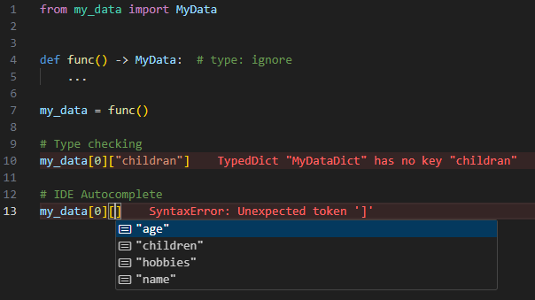

Standard API#
The Standard API facilitates the generation of type hints and allows exporting them as
standard .py files.
For detailed guidance on fine-tuning type information, refer to the Configuration section.
How to use it?#
You can provide input data for type hinting either as a Python object or by loading it from a YAML file:
Keep in mind that when information is loaded from a YAML file, comments starting with
# are parsed and used as docstrings for the corresponding data structures.
The code above will generate the following type interface, named MyData, and save it to
my_data.py:
from typing import TypedDict
from typing_extensions import NotRequired, TypeAlias
class MyDataDictChildren(TypedDict):
name: str
class MyDataDict(TypedDict):
name: str
age: int
hobbies: NotRequired[list[str]]
children: MyDataDictChildren
MyData: TypeAlias = tuple[MyDataDict, MyDataDict]
With this generated type information, MyData can now be used to type-hint any compatible
data structure:

What are some of its potential use-cases?#
- Data Structure Interface Generation: Complex data structures can be difficult and time-consuming to type-hint manually. This tool generates these interfaces in milliseconds, saving significant development effort.
- Data Structure Validation: The tool generates type information that defines the underlying structure of a dataset. This feature allows exporting the results as a string and comparing whether two objects share the same data structure, while ignoring value differences.
- Static Validation: Having detailed type information enables type checkers to perform more accurate validations, ensuring type consistency across a data structure and its usage.
- Enhanced Development Workflow: Generated type information is recognized by IDEs, providing autocompletion and simplifying access to complex data structures.